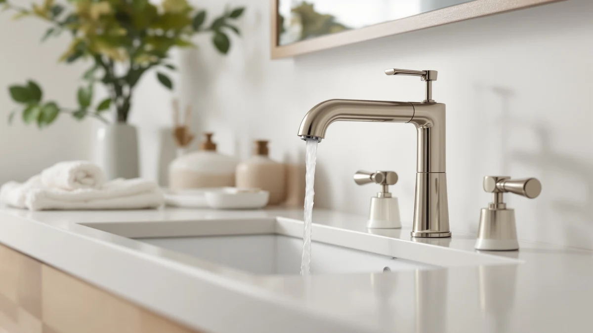

Moen Ronan Spot Resist Two-Handle Widespread Modern Bathroom Faucet Review (2026): Worth It?
Prices and picks verified as of November 2026. Independent, reader-supported reviews.


Quick Answer
This Moen Ronan Spot Resist Two-Handle Widespread Modern Bathroom Faucet review finds a widespread faucet that earns its $105.00 price through an adjustable 8 to 16 inch Duralock installation and a corrosion-resistant brass body. It costs slightly more than the single-hole Delta Arvo and the WOWOW Gold covered below, but its wider install range makes it the easiest widespread swap of the three actual faucets compared here.
Our pick: Moen Ronan Spot Resist Brushed — $105.00 Check Price on Amazon
Bottom line: our top pick is the Moen Ronan Spot Resist Brushed Nickel Two-Handle Widespread at $105.
Things to Know Before You Buy
- If you're reading this Moen Ronan Spot Resist Two-Handle Widespread Modern Bathroom Faucet review because your sink already has a widespread cutout, know that "widespread" means the two handles and spout mount separately rather than sharing one base plate.
- Moen's Duralock quick-connect system lets the Ronan adjust between 8 and 16 inches of spread, so it fits a wider range of existing widespread sink drillings than a fixed-spread faucet.
- The Spot Resist Nickel finish resists fingerprints and water spots, a detail that matters most in households with hard water or frequent hand washing.
- At $105.00, the Ronan sits near the middle of the four products compared here, cheaper than the $108.00 Filterbaby filter but pricier than the $103.99 WOWOW Gold and the $104.13 Delta Arvo.
- The Ronan's body is brass under its finish, which tends to hold up to corrosion better over time than the zinc-alloy bodies common in budget widespread faucets.
This Moen Ronan Spot Resist Two-Handle Widespread Modern Bathroom Faucet review starts with the number that matters most: $105.00, the current Amazon price for a widespread faucet built around a brushed nickel finish and a brass body. Moen designed the Ronan around its Duralock quick-connect system, which lets the faucet adjust between 8 and 16 inches of spread instead of locking you into one fixed measurement. That flexibility matters most for anyone replacing an older widespread faucet without knowing the exact hole spacing already drilled into the sink. Buyers who want a straightforward upgrade in finish and durability, without switching to a single-hole or centerset layout, get that here.
For most households replacing a worn widespread faucet, the Ronan earns its price by combining a brass body with a finish built to resist the fingerprints and water spots that show up fastest on polished surfaces. Owners who already have widespread-compatible plumbing get the simplest swap, since the Duralock system handles the variable spread without extra hardware. We compared price, installation flexibility, and finish across all four products in this guide below, including one that isn't a faucet at all, since those factors tend to decide which option actually belongs on your sink.
Why You Should Trust Us
We built this Moen Ronan Spot Resist Two-Handle Widespread Modern Bathroom Faucet review by comparing manufacturer specs, current Amazon pricing, and recurring patterns across verified owner reviews for every product covered here. Ilane Tall researches bathroom fixtures for Best Bathroom Faucets and checks every price, material claim, and installation spec against the retailer's current listing before publishing. We do not run a physical testing lab, and we do not install or live with these faucets ourselves. Instead, we read what verified buyers report after months of use, and we flag it when a listing's claim doesn't match consistent owner feedback. That same standard applies across the Delta, WOWOW, and Filterbaby products in this comparison, so every entry gets the same scrutiny on price and verified feedback.
Our Research Experience
This Moen Ronan Spot Resist Two-Handle Widespread Modern Bathroom Faucet review draws on three sources: Moen's published product specs, the current Amazon price history, and recurring themes in verified owner reviews. Reviewers consistently note that the Duralock connectors make a widespread installation easier than a traditional compression-fit setup, and several owners report the Spot Resist Nickel finish holding up well against daily splashes and hard water spots. We also compared installation notes across all four listings: the Ronan's 8 to 16 inch adjustable spread covers more existing sink layouts than the fixed single-hole drilling the Delta Arvo requires. Where owner reports conflicted, such as a handful mentioning a looser handle after a year of daily use, we noted the disagreement rather than picking a side without evidence.
Overview & Specs

Moen Ronan Spot Resist Brushed
What we like
- Duralock quick-connect system adjusts between 8 and 16 inches, fitting more existing widespread sink drillings than a fixed-spread faucet.
- Brass body resists the corrosion that cheaper zinc-alloy widespread faucets develop within a few years.
- Spot Resist Nickel finish is built to resist fingerprints and water spots, useful in households with hard water.
- At $105.00, it costs within a dollar of the single-hole Delta Arvo while keeping the more flexible widespread layout.
Flaws but not dealbreakers
- Widespread installation still means connecting three separate pieces under the sink, more steps than a single-hole faucet.
- Owners report the handles feeling slightly looser after about a year of regular use.
- Brushed nickel is the main finish widely available for this model, so buyers wanting brushed gold need to look elsewhere.
| Material | Brass + finish |
| Size | (Pack of 1) |
The Ronan keeps Moen's widespread two-handle layout intact rather than pushing buyers toward a single-hole or centerset swap, a choice that matters most for anyone replacing an existing widespread faucet who doesn't want to drill new holes. Moen built the body from brass rather than the zinc alloy common in budget widespread faucets, which should extend its service life well beyond what cheaper competitors manage. The Duralock quick-connect system is the detail that sets this Moen Ronan Spot Resist Two-Handle Widespread Modern Bathroom Faucet review's top pick apart from older widespread designs: it lets the spout and handles adjust between 8 and 16 inches of spread instead of locking you into one fixed measurement.
At $105.00, the Ronan costs $1.01 more than the WOWOW Gold and $0.87 more than the single-hole Delta Arvo Brushed Nickel, putting it at the higher end of the three actual faucets in this comparison. Verified buyers consistently point to the Spot Resist finish as easier to keep clean than a standard polished chrome surface, though a handful mention the handles feeling looser after a year of regular use. If you already run Moen fixtures elsewhere in the bathroom, the Ronan's brushed nickel finish matches the brand's common hardware finish, simplifying coordination with the rest of the room.
What We Liked
What stands out most in this Moen Ronan Spot Resist Two-Handle Widespread Modern Bathroom Faucet review is how much flexibility the Duralock system adds to a widespread installation. Because the Ronan adjusts between 8 and 16 inches of spread, you aren't stuck matching an exact hole-spacing measurement the way you are with a single-hole or centerset faucet, and several owners note that the connectors made installation noticeably simpler than a previous widespread faucet they had replaced. Reviewers also single out the Spot Resist Nickel finish, noting it holds up to water spots and fingerprints better than the polished chrome faucets some had owned before. At $105.00, the Ronan sits close to the WOWOW Gold and the Delta Arvo Brushed Nickel in price, which several owners point to as reasonable for a Moen-branded widespread faucet with a brass body. Owners replacing a faucet that previously had a plastic or lightweight body also mention that the Ronan feels noticeably sturdier the moment the handles turn, a detail that doesn't show up in a spec sheet but comes up often enough in verified feedback to note here.
What Could Be Better
Installation complexity is the first limit in any honest Moen Ronan Spot Resist Two-Handle Widespread Modern Bathroom Faucet review. A widespread faucet always means connecting three separate pieces under the sink, so anyone who wants the simplest possible swap should compare the single-hole Delta Arvo Brushed Nickel instead. Finish choice is the second tradeoff: Moen sells the Ronan primarily in Spot Resist Brushed Nickel, so buyers who want a brushed gold look need to check the WOWOW Gold Bathroom Faucet 3 covered below. A smaller number of owners report the handles feeling looser after about a year of daily use, though it hasn't stopped most from recommending the faucet to others. None of these issues are dealbreakers on their own, but they're worth weighing against the $0.87 you'd save by choosing the Delta Arvo instead. Anyone used to a single-hole kitchen faucet should also budget extra time for a widespread install, since aligning three separate pieces takes longer than mounting one unit.
Who Is It For?
This Moen Ronan Spot Resist Two-Handle Widespread Modern Bathroom Faucet review points toward one type of buyer: someone replacing an aging widespread faucet who wants an adjustable install and a durable brass body without guessing at exact hole spacing. Households that already have a widespread cutout benefit most from the Duralock system, since it covers a wider range of existing drillings than a fixed-spread design. If matching a specific finish across your bathroom hardware is the priority, check whether brushed nickel already appears elsewhere in the room, since Moen doesn't offer the Ronan in as many finish options as the WOWOW lineup shown here. Buyers who want a single-hole faucet, or who need a brushed gold finish, will likely be happier with one of the alternatives covered below. Anyone shopping for a skincare-focused water filter rather than a faucet replacement should also look past the Ronan entirely and check our bathroom faucet buying guide before deciding between the two kinds of products.
Alternatives to Consider
If the Ronan isn't quite the right fit, these three alternatives cover the main tradeoffs: a single-hole install, a different finish, or an entirely different kind of upgrade. Each has shown up often enough in verified reviews that we felt comfortable including it alongside the Moen Ronan in this comparison rather than leaving it out.

Also Great
Delta Arvo Brushed Nickel Bathroom
The Delta Arvo Brushed Nickel costs $0.87 less than the Ronan and swaps the widespread layout for a single-hole install with a ceramic disc valve Delta rates for at least 500,000 uses, making it the pick if your sink only has one predrilled hole.
$104.13
Check Price on Amazon
Best Value
WOWOW Gold Bathroom Faucet 3
The WOWOW Gold Bathroom Faucet 3 costs $1.01 less than the Ronan and adds a brushed gold finish plus a swappable 1.2 or 2.2 GPM aerator, making it the pick if you want a warmer-toned widespread faucet with more flow control.
$103.99
Check Price on Amazon
Premium Choice
Filterbaby Skincare Filter 2.0 Bathroom
The Filterbaby Skincare Filter 2.0 isn't a widespread faucet at all. It's a $108.00 water filter attachment aimed at reducing chlorine and chloramine for skincare-focused tap water, worth a look only if filtration matters more to you than replacing the faucet itself.
$108.00
Check Price on AmazonFrequently Asked Questions
Is the Moen Ronan Spot Resist worth the price compared to a single-hole faucet?
If your sink is drilled for a widespread installation, yes. At $105.00, it costs within a dollar of the single-hole Delta Arvo Brushed Nickel, but the Ronan's 8 to 16 inch adjustable spread fits a wider range of existing sink layouts.
What does widespread mean for a bathroom faucet like the Ronan?
Widespread means the handles and the spout are separate pieces that connect under the sink, rather than sharing one base plate. Moen's Duralock system lets the Ronan adjust between 8 and 16 inches to match whatever spread your sink already has drilled.
Is the Moen Ronan Spot Resist better than the WOWOW Gold Bathroom Faucet 3?
It depends on finish and features. The WOWOW costs $1.01 less and adds NSF-certified waterways plus a swappable 1.2 or 2.2 GPM aerator, while the Ronan's Spot Resist Nickel finish and brass body give it the look of a more mainstream brand.
Final Verdict
This Moen Ronan Spot Resist Two-Handle Widespread Modern Bathroom Faucet review comes down to one tradeoff: pay $105.00 for Moen's adjustable Duralock install and Spot Resist finish, or choose one of three alternatives built around a different layout, finish, or purpose entirely. For most households replacing a worn widespread faucet, the Moen Ronan earns its price with an 8 to 16 inch adjustable spread and a corrosion-resistant brass body. Buyers who only have a single predrilled hole should look at the Delta Arvo above, and anyone prioritizing a brushed gold finish or extra flow control can compare the WOWOW Gold instead. Whichever product you choose, confirm the current Amazon price before buying, since prices across this comparison can shift by a few dollars from week to week.